Nyzo version 543 (commit on GitHub) adds optional consensus tracking and a small sentinel-monitoring change.
This version affects primarily the verifier. It also includes a minor monitoring change for the sentinel.
The verifier identifier has been added to the Block.toString() method.
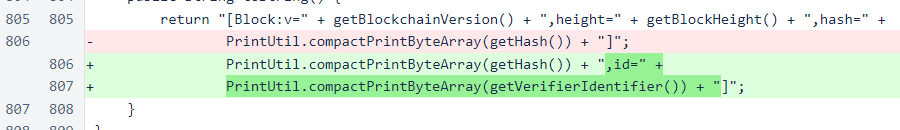In BlockVoteManager, all non-null votes are now registered with the new ConsensusTracker. If the tracker is not enabled, this method does nothing.
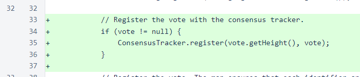Unrelated to the consensus tracker, the activationHeight is now considered when scoring blocks to determine if a block is a missed upgrade opportunity or an improperly timed upgrade.
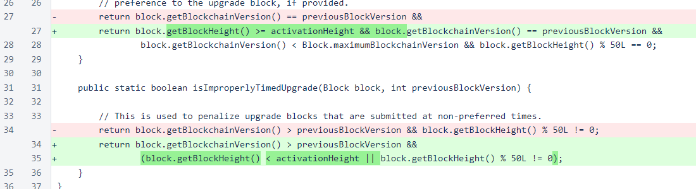In PersistentData, reading of the file has been modified to support values that contain equals signs.
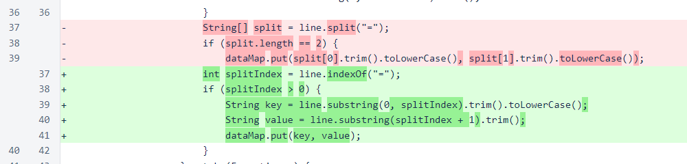In UnfrozenBlockManager, all non-null blocks are registered with the ConsensusTracker. This uses the same registration method used for votes. A height is provided to this method to help the tracker organize its data.
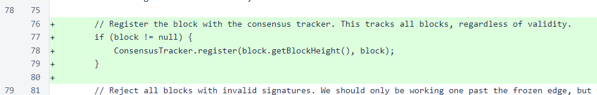In Verifier, freezing of blocks is registered with the ConsensusTracker. Also, maintenance is performed each time a block is frozen. This allows the ConsensusTracker to periodically write old data to files and remove it from memory.
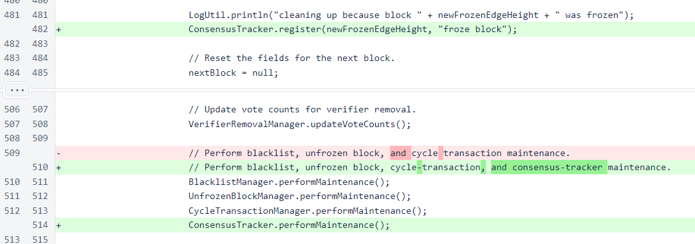A logging statement was removed from BlockResponse. This statement was not particularly helpful, and it was cluttering the output. If logging of blocks responses is added again in the future, it will be done at an aggregate level.
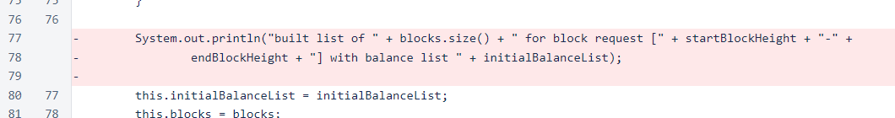A persistent value storing the full string representation of the last block transmitted has been added to the Sentinel class. This new value is displayed by the SentinelController.
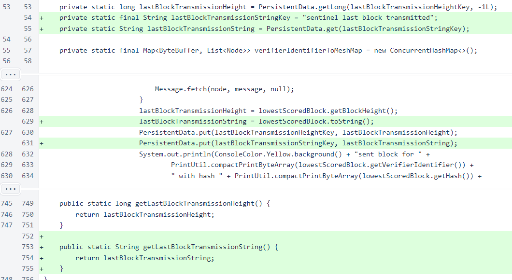ConsensusEvent encapsulates data points for the ConsensusTracker. Each event includes a timestamp, height, and data object.

ConsensusTracker collects data about the consensus process and writes one or more file for each height. To enable the ConsensusTracker, add the following line to /var/lib/nyzo/production/preferences:
enable_consensus_tracker=1
By default, the tracker will disable itself when available disk space falls below 20GB. A higher or lower threshold can be specified in the preferences file. For instance, if you want the tracker to disable itself when available disk space falls below 30GB, add the following line to /var/lib/nyzo/production/preferences:
consensus_tracker_storage_threshold_bytes=30000000000
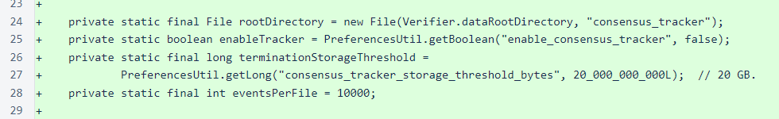The register() method adds an event to the map. Events outside a reasonable height range are rejected, and concurrency concerns are handled appropriately. If a set of events at a particular height has gotten too large, it is written to a file prematurely to conserve memory.
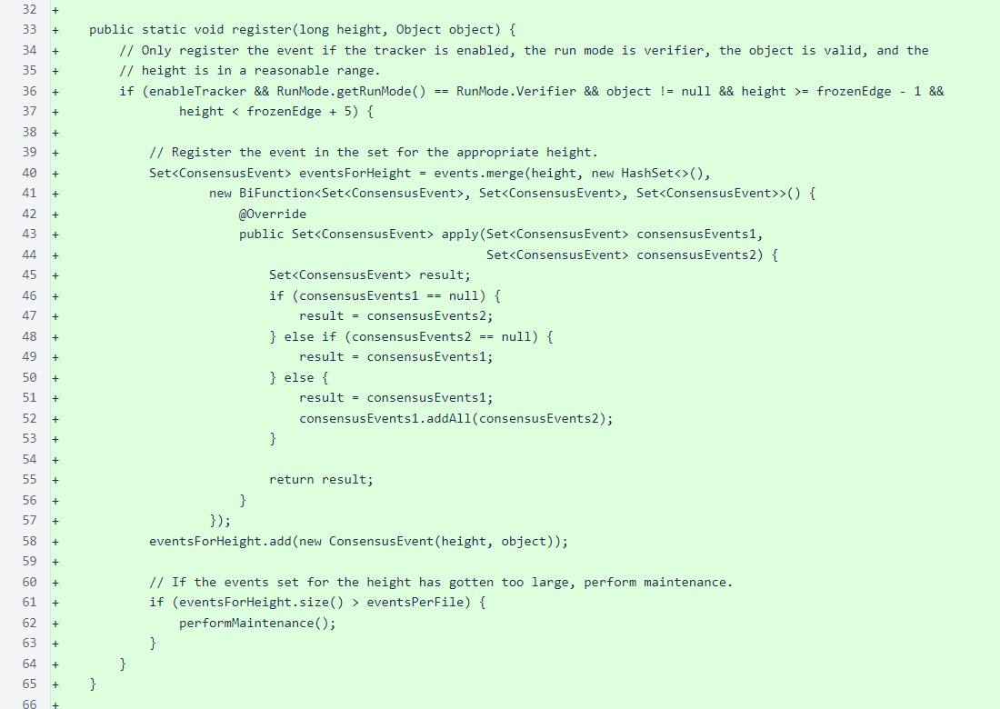The performMaintenance() method removes completed or excessively large heights from memory and writes them to files. It also deactivates the consensus tracker if available storage space has fallen below the specified threshold.
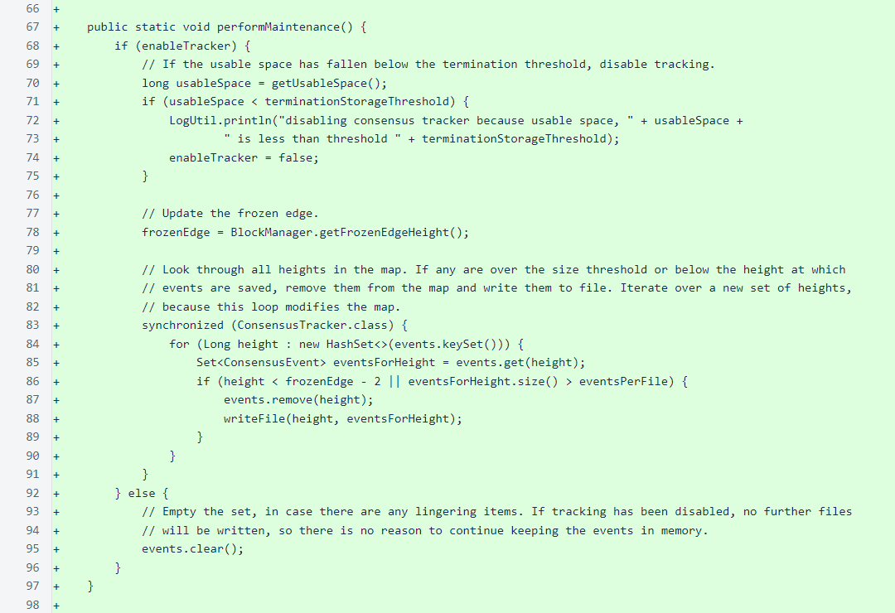The writeFile() method writes events for a single height to a file. The events are sorted on timestamp, and vote totals for each hash are written at the end of the file. To conserve space, individual votes are not written when voting for a block is unanimous. In cases where consensus is not unanimous, this file could be used to make a graph showing how voting evolves over time, and it should provide some interesting insight into the consensus process.
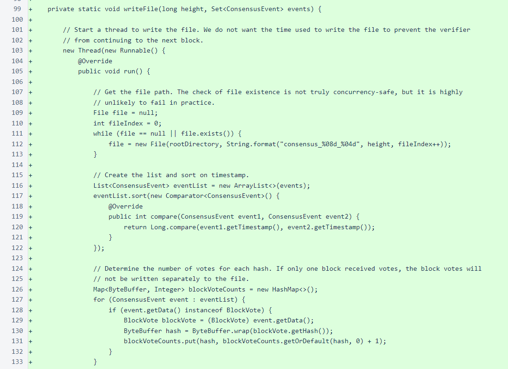The getUsableSpace() method checks for usable storage space in the destination folder. If the actual space cannot be determined, a value of 0 is returned, which will cause the ConsensusTracker to terminate if the threshold is set to any value greater than 0.
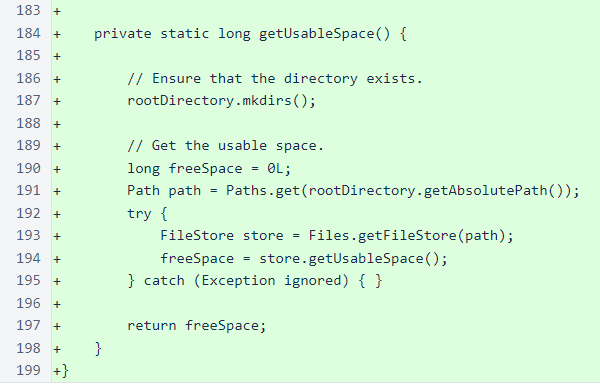In PrintUtil, a compact version of printTimestamp() has been added for use in the consensus-tracker files.
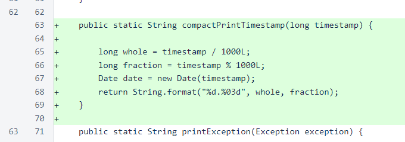In SentinelController, the new block string replaces the block height in the display.
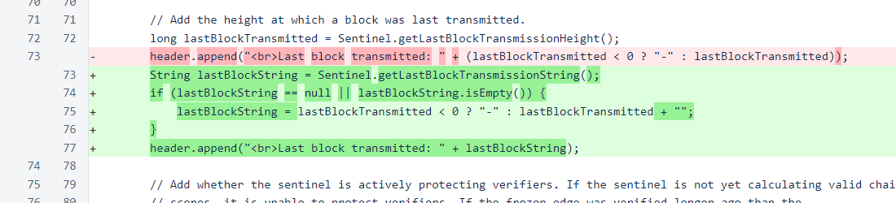